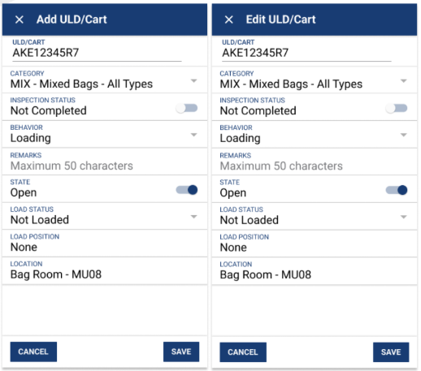
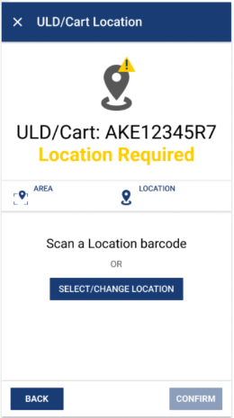
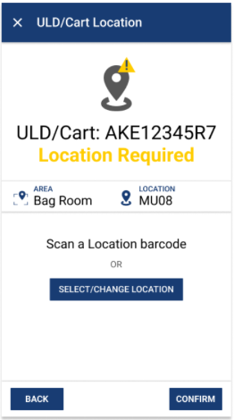
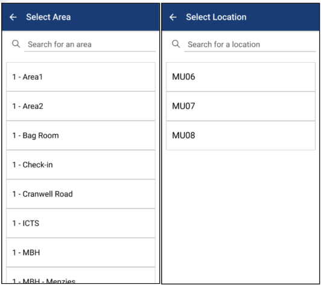
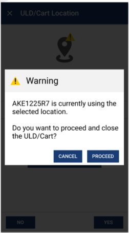
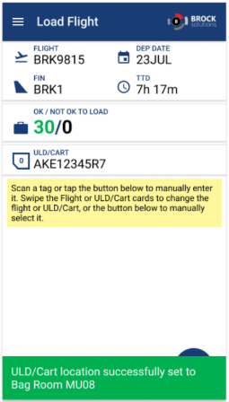

Work Sample
WSI Speedloader - Container Location Association
This feature supports how WSI loads bags into containers using a device called a speedloader.
WSI wants the ability to scan bags in SmartSuite as they are loaded into a container. To make
that workflow possible, BPMs sent when bags pass through the speedloader—which include the
location where the speedloader is positioned—need to map to a container. That means the system
needs a location that can be associated with a container.
The overall feature was split across teams. One team owned the BPM-related work, while my team
owned the ability to manually assign locations to containers.
What I Owned
- New Container Location Association screen on the mobile client.
- Wiring location selection through the existing area/location flow used for workstations and devices.
- Location fields on Add/Edit ULD/Cart and related pages.
- Location Already in Use warning, including the close-container path in that flow.
- API calls for assigning a location and closing a container, based on existing mutation workflows.
- Snackbar confirmation when a location was successfully set.
Add and Edit ULD/Cart Location Fields
One of the first visible pieces of the feature was adding a Location field to the Add
ULD/Cart and Edit ULD/Cart screens. That gave users a place to see and set the location
associated with a container as part of the existing create and edit flows, rather than
treating location as an isolated concept.

The Add and Edit ULD/Cart screens with the new Location field.
Container Location Association Screen
The main mobile work centred on a new ULD/Cart Location screen. From there, users can scan a
location barcode or manually select an area and location. The screen makes it clear when a
location is still required before the association can be confirmed, and it reuses the existing
Select Area / Select Location flow already used elsewhere in the app for workstation and
device settings.

Location still required before confirm is enabled.

Area and location selected and ready to confirm.
Location Selection Flow
The specification called for the association screen to use the existing Select Area and
Select Location screens already used for workstation and device settings. My work was to
wire that shared flow into the new container location association path so operators selected
locations through the same screens they already knew elsewhere in the app.

The existing Select Area and Select Location screens reused for container location assignment.
Location Already in Use Warning
The feature also required a warning when the selected location was already associated with
another container. I implemented that dialog, which asks whether the user wants to proceed
and close the ULD/Cart that currently owns the location.
API Calls and Mutation Flows
Beyond the UI, I created API calls for assigning a location and for closing a container as
part of the location-in-use warning flow. That meant carefully reviewing existing container
mutation workflows, deciding which data each call needed, and determining whether existing
endpoints could be reused or whether new ones were required.
Snackbar Feedback
Smaller supporting work included snackbar messages so users received clear confirmation when
a location was successfully set. That feedback helped make the association flow feel complete
within the broader Load Flight workflow.
Warning and Success Feedback
Together, the Location Already in Use warning and the success snackbar covered both sides of
the association experience: alerting users when a location conflict needed a decision, and
confirming when an assignment completed successfully.

Warning shown when another ULD/Cart is already using the selected location.

Success snackbar confirming that the ULD/Cart location was set to Bag Room MU08.